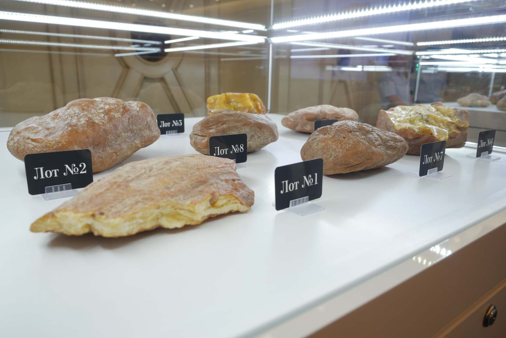
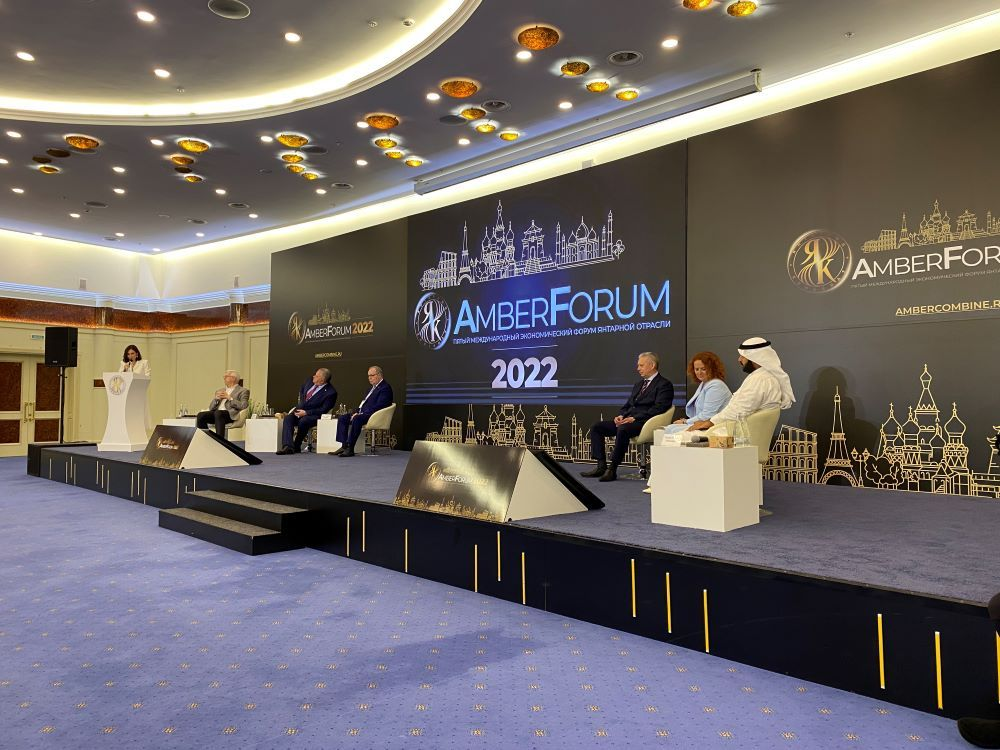
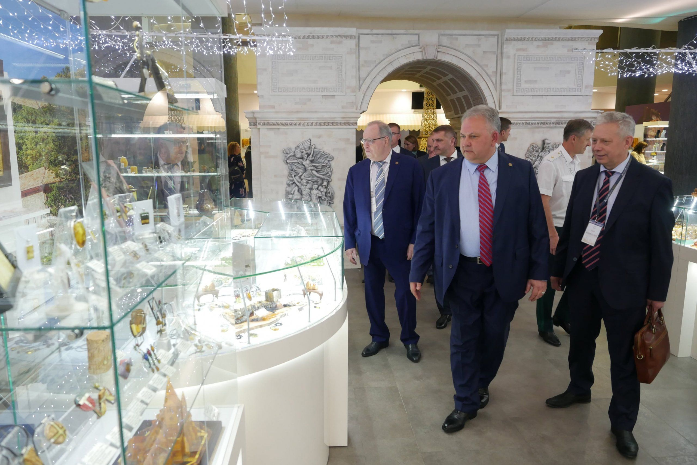
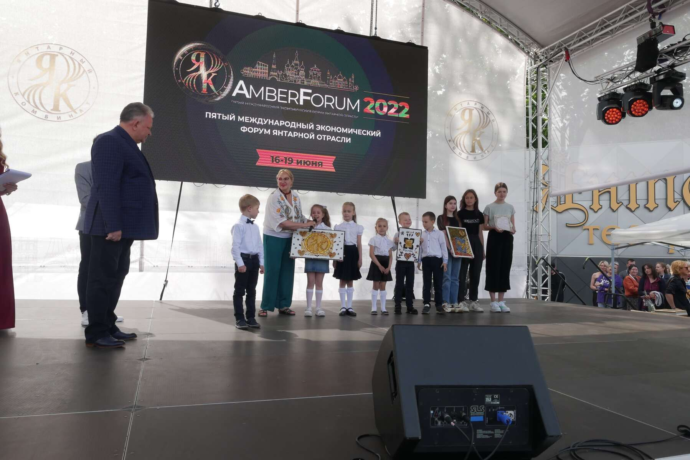
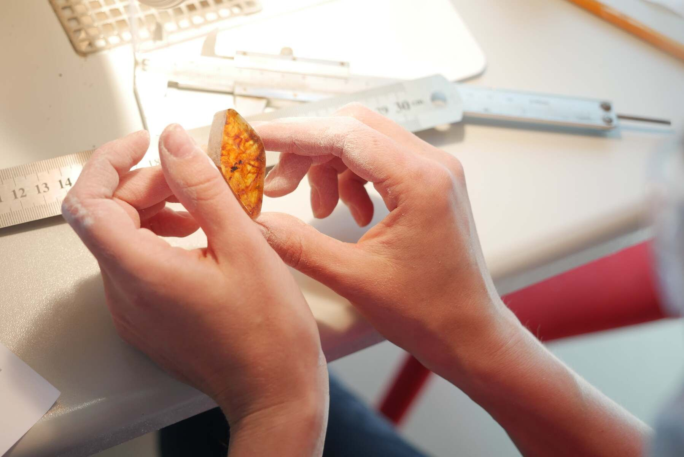

Итоги V Международного экономического форума янтарной отрасли AmberForum 2022
Уже который раз в Светлогорске прошел V Международный экономический форум янтарной отрасли AmberForum 2022, организатором которого выступил Калининградский янтарный комбинат Госкорпорации Ростех

Уже который раз в Светлогорске прошел V Международный экономический форум янтарной отрасли AmberForum 2022, организатором которого выступил Калининградский янтарный комбинат Госкорпорации Ростех. На этот раз основной темой стал «Янтарь и здоровье человека». Культурное событие янтарной отрасли посетило более шести тысяч участников из разных стран мира: делегации из Китая, Кувейта, Турции, Литвы, Сербии. В открытии форума принял участие почетный консул Казахстана в Калининграде Александр Каневский, а сотрудничеством с комбинатом заинтересовалась Лига ювелиров из Казахстана во главе с председателем Кайсаром Жумагалиевым. Также форум посетили почетный консул Армении в Калининграде Юрий Каджоян и советник посла Армении в России Карен Суджян. Здесь же, на форуме, обсуждались вопросы сотрудничества между Калининградским янтарным комбинатом и армянским ювелирным заводом «Шогакн», занимающимся обработкой алмазов. В мероприятиях форума приняли участие представители Администрации Президента России, Минпромторга России, Правительства Калининградской области, предпринимательского, научного и культурного сообществ.

Особый интерес был со стороны СМИ и бизнеса, а для туристов и жителей – форум как всегда стал замечательным праздником с обширной культурной программой, где с отличной концертной программой выступали артисты.
Если говорить о деловой программе, то она включала в себя пленарное заседание, научно-практический семинар, круглые столы по вопросам развития промышленного туризма и производства изделий из янтаря. Огромный интерес вызвали аукционы по продаже уникальных камней. Необходимо отметить, что все лоты с представленными образцами янтаря были буквально сметены. За два дня аукционов редких камней с молотка ушло 80 лотов стоимостью свыше 20 миллионов рублей. Самородки весом более 1 кг, инклюзы и камни в виде капли нашли своих обладателей как в России, так и за рубежом. В торгах приняли участие 17 резидентов России, Сербии, Армении, Турции, Гонконга. Такой интерес к российскому янтарю неудивителен, ведь Калининград – основной добытчик этого солнечного камня.


Также в рамках AmberForum прошла выставка-продажа изделий из янтаря с участием 34 компаний, занимающихся переработкой камня. Здесь можно было отметить как интересные современные работы, так и традиционное представление изделий из янтаря, а также не иссякающий интерес и огромную любовь к изделиям из янтаря российских покупателей. По итогам форума лучшие переработчики балтийского самоцвета удостоены премии «Лидер янтарной отрасли», которая включила в себя номинации «Лучший художник-камнерез», «Модные тенденции», «Янтарный сувенир», «Янтарь как произведение искусства», «Надежный партнер», «Нестандартный художественный взгляд», «Янтарь как бриллиант».
Особым интересом пользовались и три творческих конкурса: авторских работ художников-ювелиров, детских рисунков «Я люблю янтарь» и конкурс профессионального мастерства в рамках международного проекта WorldSkills. За что огромная благодарность к организаторам, ведь это дает толчок развитию янтарной отрасли, а также формированию долгосрочной любви и лояльности к этому солнечному камню.


Если говорить о самом Янтарном комбинате, то необходимо отметить, что за полтора года он сделал огромный рывок, в первую очередь сделав полную реконструкцию своего здания. Кроме того, огромен вклад комбината в создание своего интерактивного музея, где представлена история добычи прибалтийского янтаря и самого комбината. Современный, технологичный музей в симбиозе с историческими фактами и фотографиями, а также изделиями разных лет говорят о бережном отношении комбината к своему прошлому. Удивляет и размах карьеров добычи янтаря. Это выглядит мощно, вдохновляет, и этим можно гордиться.
Фотографии по теме




